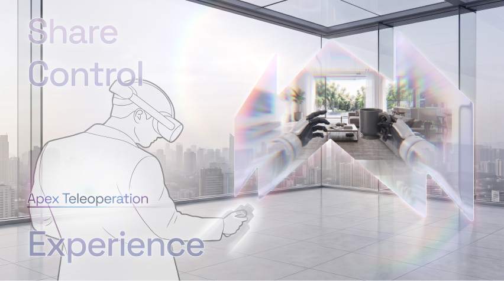
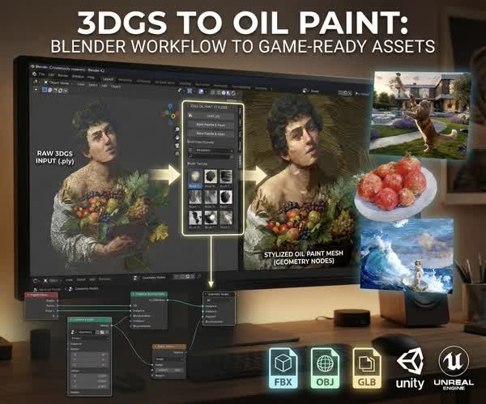
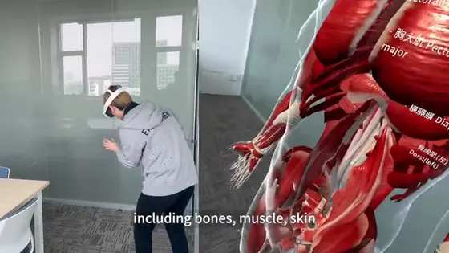
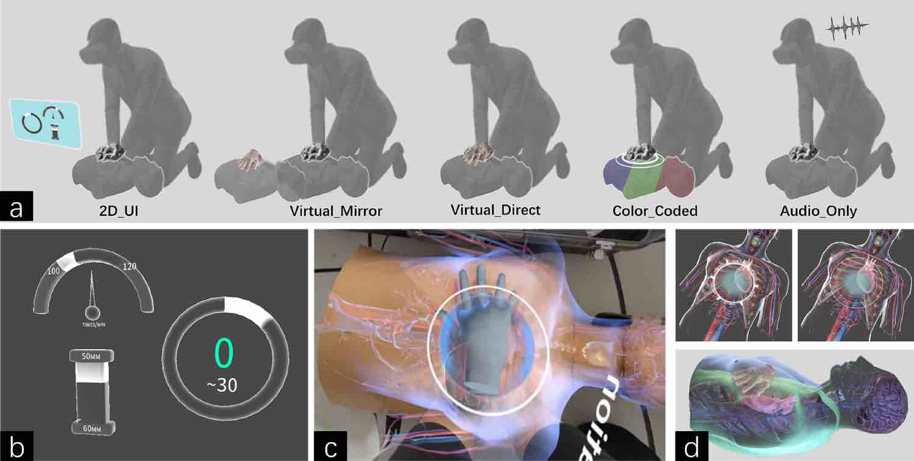
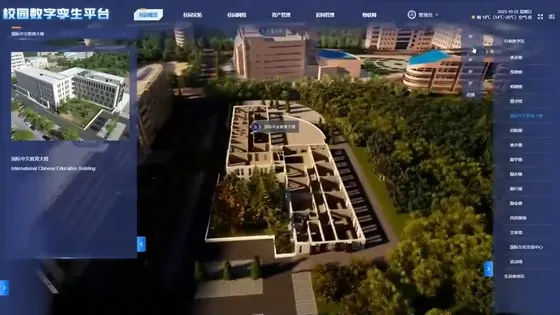
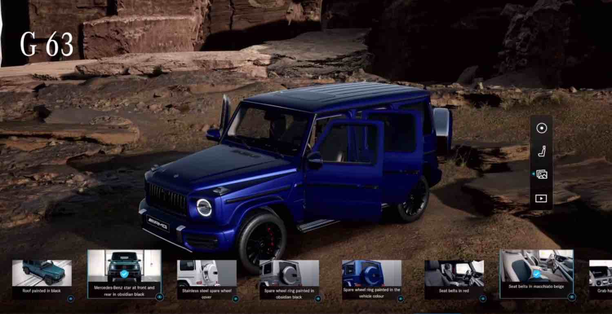
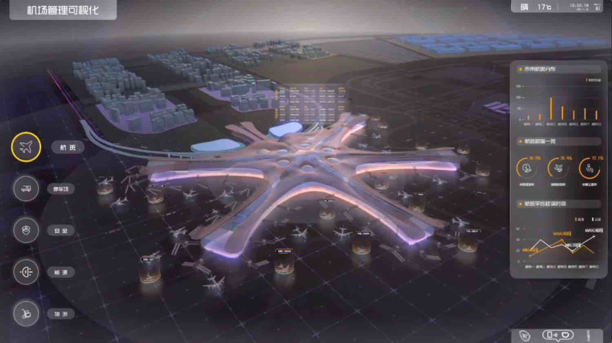
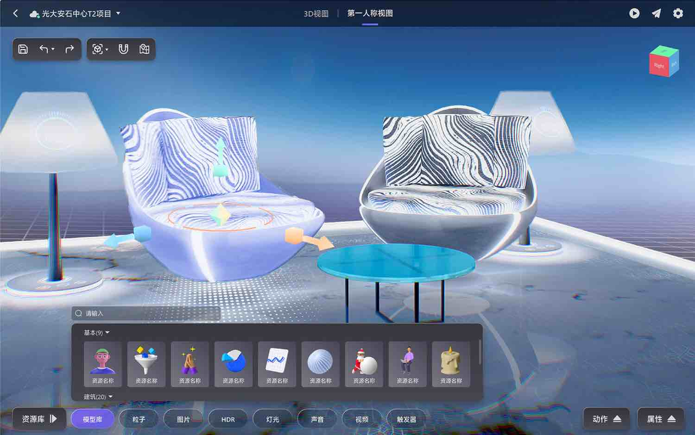
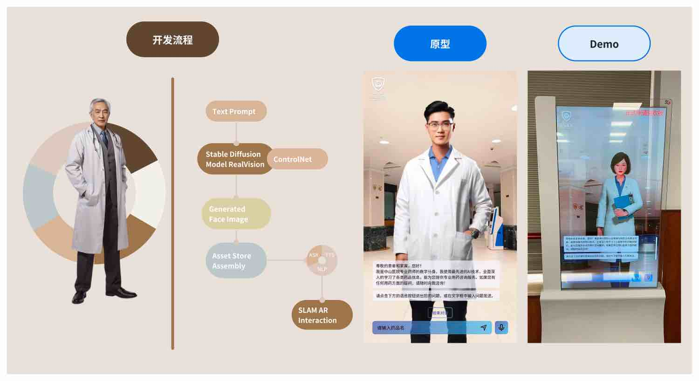
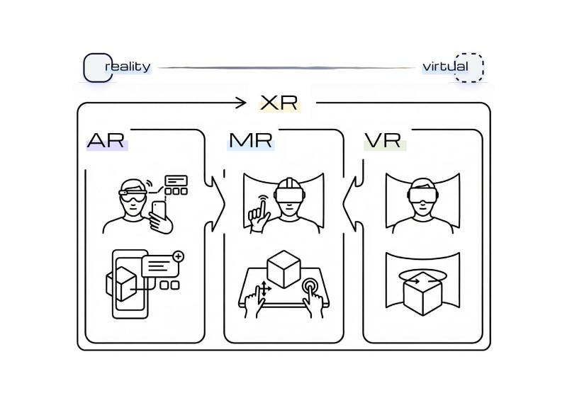

Unified Teleop XR: Open-source toolkit
开发 Unity 工具包，通过 OpenXR 读取姿态、速度和交互输入，经 Cyclone DDS 发布到 ROS 2 话题。实现追踪丢失、异常运动和动作范围限制的处理逻辑，并用 GPU 计算着色器从空间视频重建点云与网格。
- Unity
- OpenXR
- ROS 2
- Cyclone DDS
- 机器人遥操作
- 计算着色器
- 空间视频重建
我是一名专注于计算机图形学与交互系统的软件工程师，主要使用 C#、C++、Python，基于 Unity、Unreal Engine 及自研引擎开发实时三维应用、机器人遥操作、智能座舱与多模态交互系统。我关注计算机图形学、人工智能与新兴计算平台的融合，致力于设计和实现面向未来先进技术的解决方案。

开发 Unity 工具包，通过 OpenXR 读取姿态、速度和交互输入，经 Cyclone DDS 发布到 ROS 2 话题。实现追踪丢失、异常运动和动作范围限制的处理逻辑，并用 GPU 计算着色器从空间视频重建点云与网格。


基于 Unity 和 OpenXR 实现全身机器人遥操作，并开发包管理工具处理不同头显厂商的 SDK 差异。应用同步采集第一视角场景和交互数据。


开发 Blender 插件，使用自定义几何节点重建 3D 高斯泼溅数据，以查找表（LUT）烘焙颜色和笔触纹理，生成可导出为 FBX、OBJ 或 GLB 的轻量网格。
开发 UE5 插件，用统一面板生成和管理相机阵列，向 Movie Render Queue 提交批量渲染任务，并监控路径追踪渲染耗时。
开发 Unity 插件，将唤醒词检测、自动语音识别和大语言模型工具调用接入同一流程，把自然语言指令映射为 Unity 函数调用。本地自然语言理解模块处理常见指令，减少模型调用。

在 Unity 和 Meta Quest 3 上实现手势交互，支持查看肌肉、内脏、骨骼等 8 类人体结构，包含 50 个模型。通过对照实验比较混合现实、计算机辅助和传统学习方式在知识记忆、任务表现和用户体验上的差异。


使用 Unity 和 Meta Quest 3 实现混合现实原型，为未经急救培训的用户提供分步骤心肺复苏提示。研究关注引导的可用性、任务表现和认知负荷。

使用 Unreal Engine 5 构建可交互的三维校园场景，将实时渲染与校园场景浏览集成在同一应用中。


开发智能体平台与应用商城的前端，集成单点登录、成员权限、对话、报表生成、应用与模型切换，以及页面配置。

与梅赛德斯-奔驰合作研究 G-Box 的选购流程，使用 Unreal Engine 原型验证硬件与界面的交互方式。

整理腾讯云 Raydata 数字孪生项目中的实时三维渲染案例，展示场景渲染、特效和交互可视化在项目中的应用。


开发项目数据查看、工时填报和审批功能，编写需求规格与使用文档，并负责确定开发优先级和任务排期。

构建面向手机和平板的混合现实内容编辑器，支持在同一空间中配置游戏和语音对话等交互。使用视觉定位系统（VPS）在大范围地图中定位内容，并对齐关键位置。

为复旦大学附属中山医院的大厅交互屏和查房机器人制作语音交互数字人资产。交付三个角色，每个角色提供两档模型精度，并配套五种动作和 52 个标准表情。

使用自研引擎为中控屏、副驾驶屏和仪表盘开发实时三维场景。实现天气、光照和转场效果，优化场景资产，排查网格拓扑问题，并整理车机模型规范与资产流程。
在引擎中搭建手游场景，将影视级源资产转换为适合移动端实时渲染的资产，并适配角色换装、场景切换和天气系统。
Bingru Li, Yiming Luo, Jialin Wang, Nan Xiang, Yushan Pan, Hao Wang, Junjun Pan, and Zhijie Xu. 2025. Advancing Anatomy Outreach: A Systematic Comparative Study of Mixed Reality, Computer-assisted, and Conventional Methods. In SIGGRAPH Asia 2025 Educator's Forum (SA '25). Association for Computing Machinery, New York, NY, USA, Article 2, 1–8. [DOI]
Bingru Li, Jier Zhang, Yiming Luo, Jialin Wang, Zhao Wang, Yushan Pan, Nan Xiang, and Zhijie Xu. 2025. VAI-Med: Synergistic Voice and Gesture Multimodal Interaction for Medical Education. In Computer Graphics International (CGI), Accepted.
专利：气象数据处理方法、装置、存储介质及设备，2024 专利：房屋立体模型显示方法、装置、介质及设备，2023 专利：地形绘制方法、装置、存储介质及设备，2022
PMP 项目管理专业人士认证 (Project Management Professional), 2023 Professional Scrum Master (PSM I) 敏捷资质认证, 2023

从 XR 头显出发，介绍机器人遥操作中的姿态同步、实时网络传输、空间视频回传和跨平台部署。

介绍如何安装 Meta XR SDK、配置 Unity 项目，并在 Meta Quest 上运行第一个 XR 示例。

介绍 OpenXR、常见空间交互方式和相关开发工具，为选择 XR 输入和交互方式提供背景。

介绍 Unity 编辑器、游戏对象与组件，并演示如何使用 MonoBehaviour 处理输入和基础物理交互。

梳理 XR 的基本概念和发展脉络，介绍虚拟现实、增强现实和混合现实的区别及应用场景。